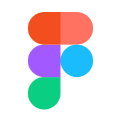
PROTOTIPAGEM E ASSETS
Figma
Telas e protótipo da aplicação, e a vetorização dos elementos gráficos do vídeo.
Um aviso para quem não pôde estar no culto.
Uma aplicação para acompanhar as transmissões da IBN, receber avisos e permanecer conectado à comunidade.
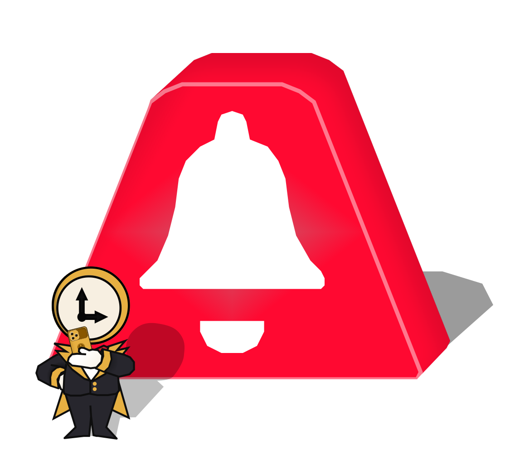
Projeto de Extensão Universitária
UNIFACS — Análise e Desenvolvimento de Sistemas
Programa: Inovação, Ciência e Transformação Digital
ODS 9 — Indústria, Inovação e Infraestrutura
Desenvolvido por Gabriel Conceição da Silva
Não importa onde você esteja, seja presencialmente ou online, chegar a tempo é difícil. Chove, o trânsito para, chega uma encomenda, o micro-ondas apita, ou o aviso que deveria chamar você não funciona. Quando você vê, o culto já começou e a oração do começo ficou para trás.
Como não posso resolver a parte do presencial, posso tentar aliviar a online. O IBN Avisos é um protótipo de aplicação feito para esse momento. Ele avisa quando a transmissão começa e leva a pessoa até ela. E tenta uma coisa mais difícil: fazer quem assiste de casa continuar sendo percebido pela comunidade.
Do desenho das telas ao vídeo de anúncio, tudo foi feito com ferramentas gratuitas ou com seus planos gratuitos.

PROTOTIPAGEM E ASSETS
Telas e protótipo da aplicação, e a vetorização dos elementos gráficos do vídeo.
PESQUISA VISUAL
Referências para as interfaces e para a composição e o motion design do vídeo.
APOIO AO DESIGN
Ideias, sugestões de design e ajuda com as dificuldades na criação das interfaces.
APRENDIZADO E VÍDEO
Tutoriais para tirar dúvidas técnicas e a hospedagem do vídeo de anúncio, para ver e rever quando quiser.
DESENVOLVIMENTO DO SITE
Escrita, edição e organização do código deste site de apresentação.
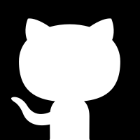
HOSPEDAGEM
Hospedagem gratuita deste site de apresentação.
EDIÇÃO DE ASSETS
Criação e edição dos elementos gráficos usados no vídeo.
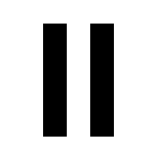
NARRAÇÃO
Geração da narração usada no vídeo, no plano gratuito.
TRILHA SONORA
Geração da música de fundo do vídeo.
EDIÇÃO DE ÁUDIO
Edição da narração e da trilha sonora, unindo tudo num só áudio antes de receber o visual.
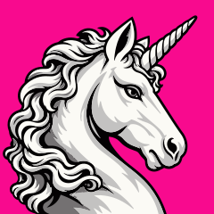
EDIÇÃO E MOTION
Montagem e animação do visual do vídeo, colocado por cima do áudio já integrado.
DOCUMENTAÇÃO
Roteiros, relatórios e demais documentos do projeto.
CUSTO TOTAL
Tudo em planos gratuitos ou serviços sem custo. Nenhum software ou plataforma exigiu investimento.
Antes de desenhar qualquer tela, foram duas entrevistas, um questionário e observação no próprio culto. Três coisas se repetiram: o aviso do YouTube demora, achar a transmissão dá trabalho e assistir de casa parece ver televisão.
E POR QUE NÃO O SININHO DO YOUTUBE?
Porque cada pessoa precisa ativar, ele serve a qualquer canal e se perde no meio de outras notificações.
Um app só para isso é como usar uma calculadora comum em vez da do celular: ela só faz conta, e você não se distrai.
Algumas escolhas parecem óbvias depois que o app está desenhado. Não eram. Aqui está o raciocínio por trás de quatro delas.
Para concentrar os avisos em um só lugar e facilitar o acesso à transmissão.
Para não criar uma barreira desnecessária para quem só quer acompanhar o culto.
Para evitar notificações provocadas por testes de transmissão.
Porque a proposta é facilitar o acesso ao conteúdo, não criar outra plataforma de vídeos.
Eu pessoalmente não tentei usar o WhatsApp como um bot de avisos, por dois motivos:
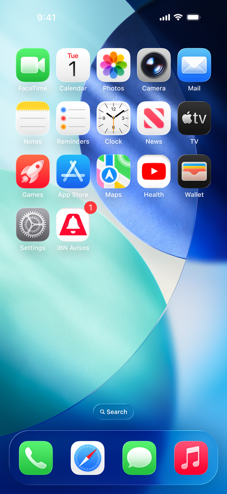
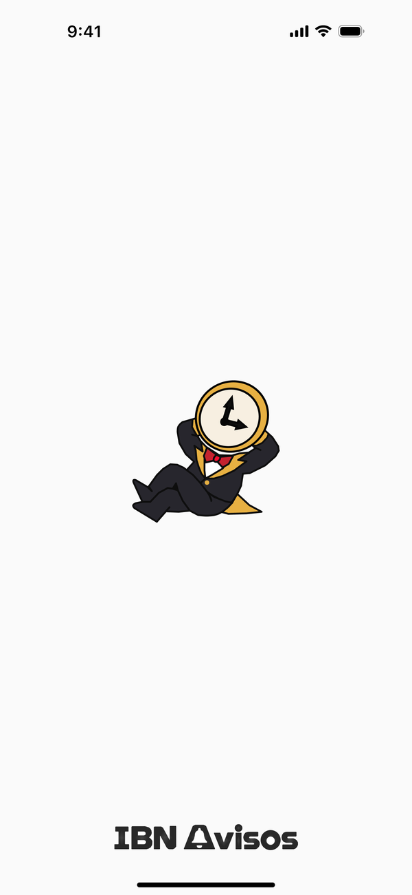
“O culto já começou?”, “Dessa vez, chegue a tempo” e “O próximo culto começa aqui”. Uma ideia em cada tela, antes de pedir qualquer coisa.
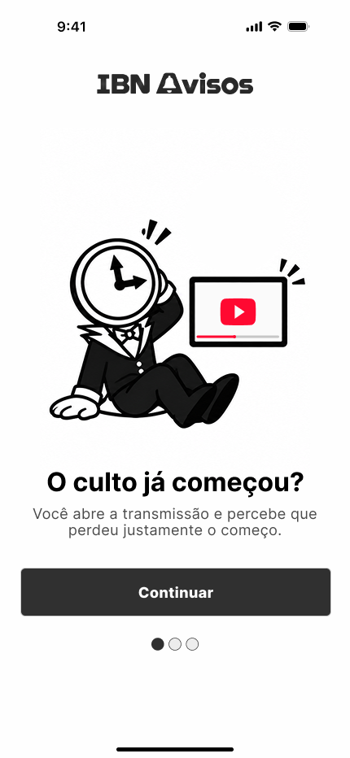
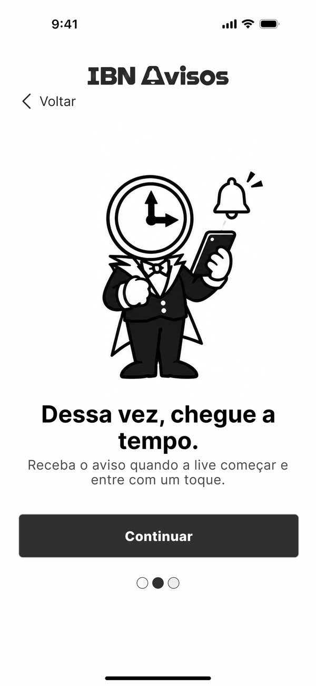
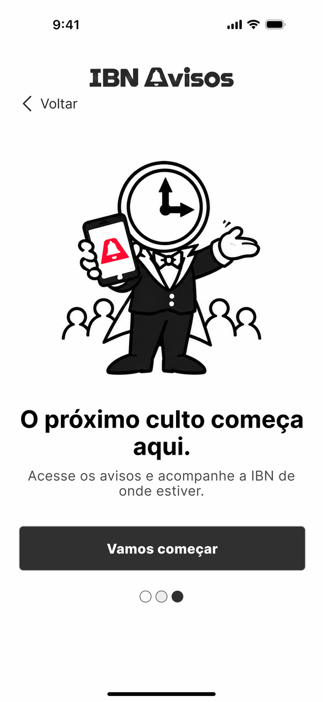
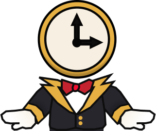
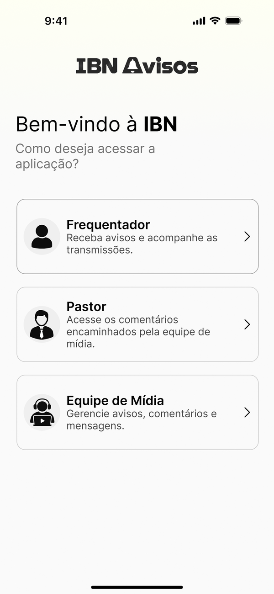
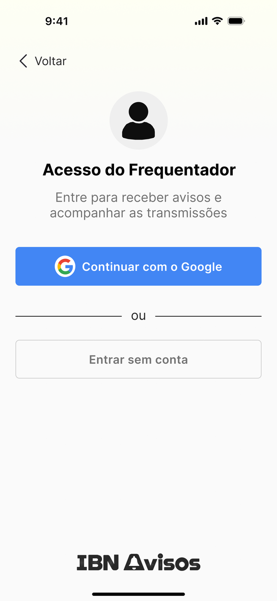
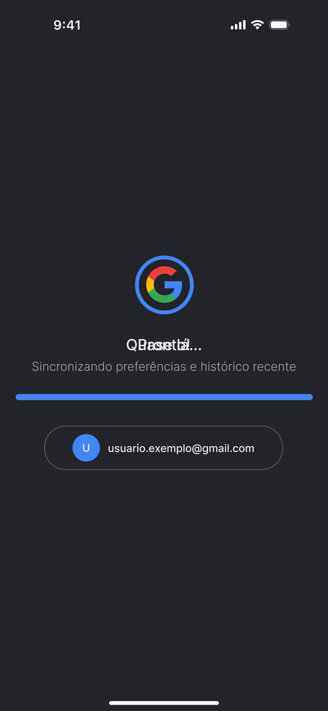
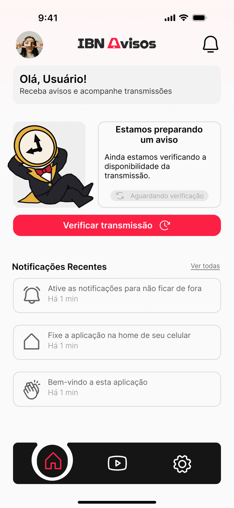
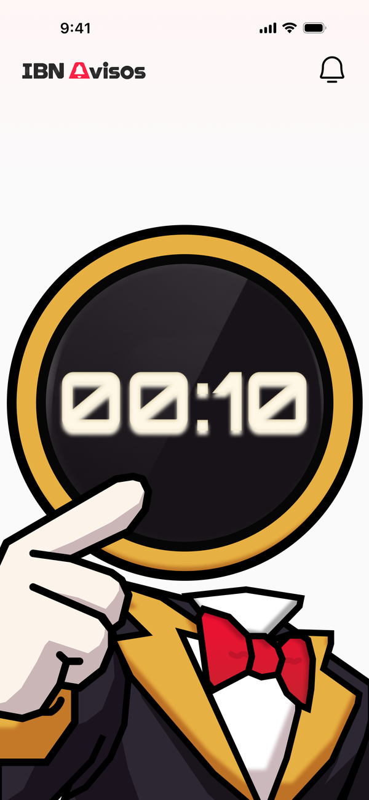
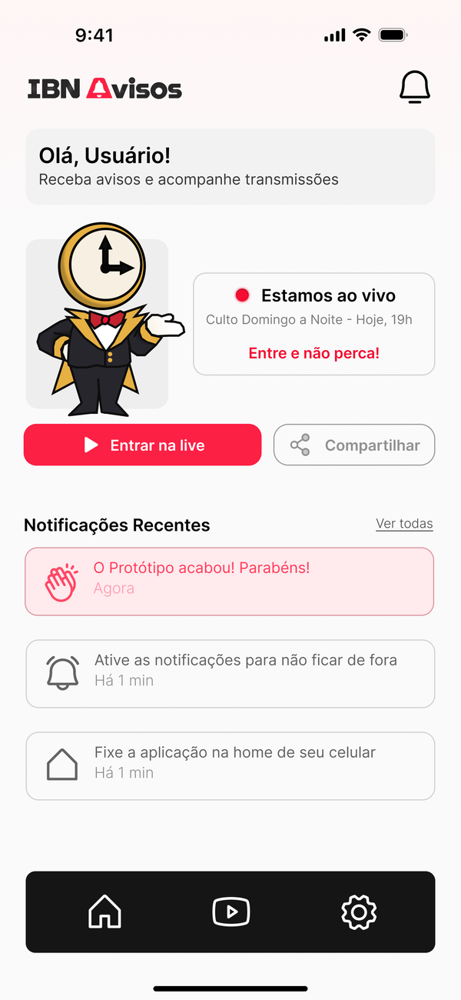
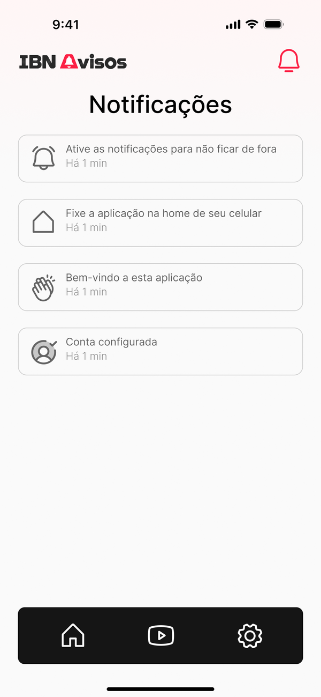
Do silêncio até o botão “Entrar na live”, é esse o caminho que o aviso percorre. Nem tudo isso existe de verdade ainda, então cada passo diz o que é o quê.
O mascote dorme. Não há nada para avisar, então o app fica quieto.
PREVISTOA mídia começa a live e o app percebe que há uma transmissão pública no ar. No protótipo, o botão “Verificar transmissão” faz esse papel.
SIMULADOO mascote espera. Passado o tempo, o app confere se a live continua no ar e pública. Assim um teste de som não vira aviso. Na demonstração, são 10 segundos.
SIMULADOO aviso respeita as preferências: só chega a quem escolheu aquele culto e não marcou “estou presencialmente”.
PREVISTOA notificação chega, o mascote se apresenta e a tela mostra “Estamos ao vivo”, com dois caminhos: entrar na live ou compartilhar o link. O envio real de notificações é simulado.
SIMULADOQuando a transmissão termina, o botão passa a ser “Ver a gravação” e o mascote volta a dormir. Esperando o próximo culto.
PREVISTO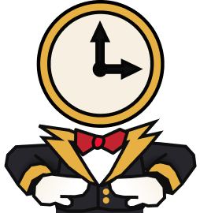
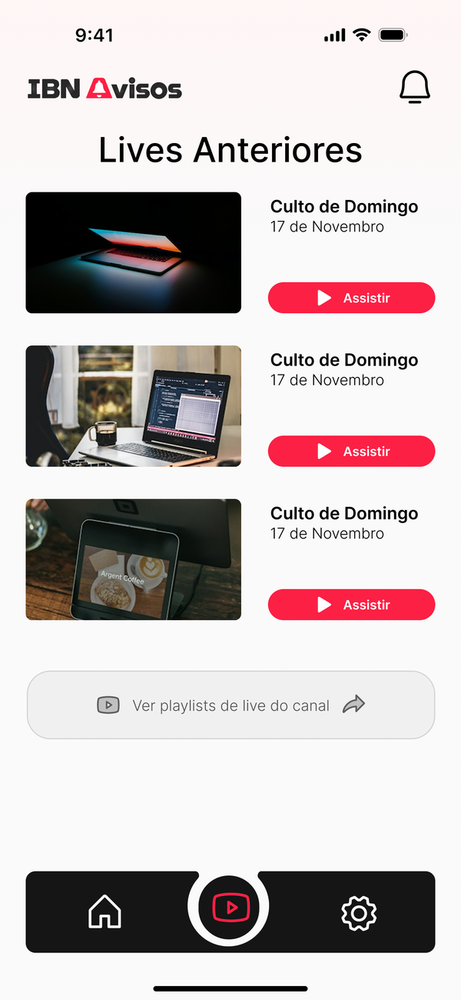
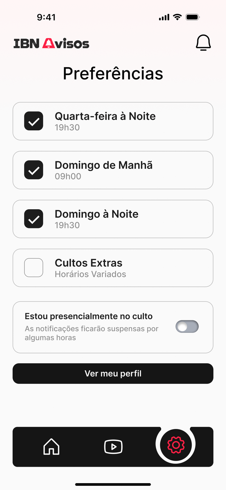
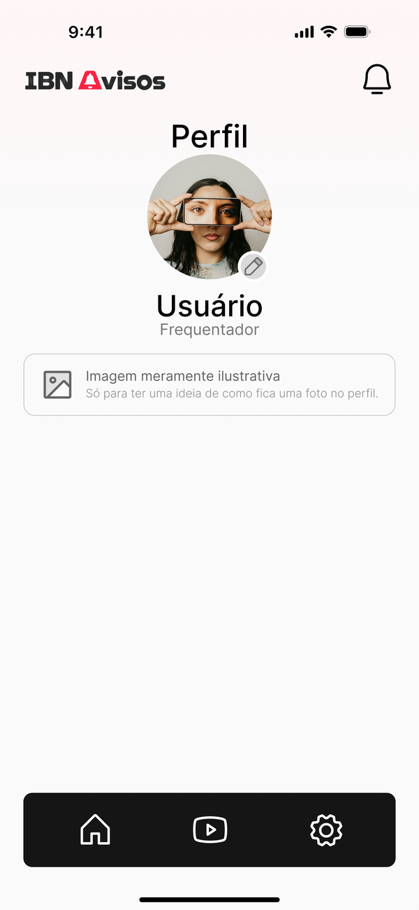
Os dois entram com usuário e senha. No protótipo, essas áreas ainda são um aviso de “em breve”, e a da mídia foi pensada para computador. Quem esquece a senha vê um aviso para falar com o desenvolvedor.
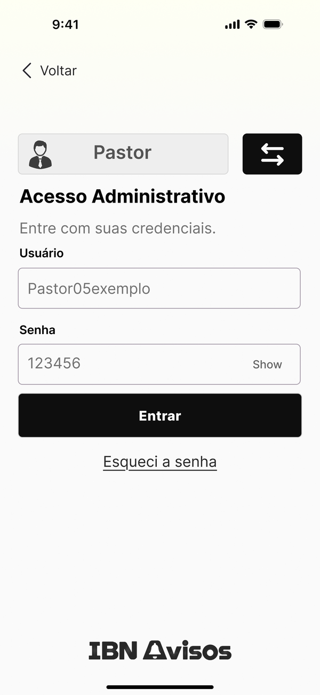
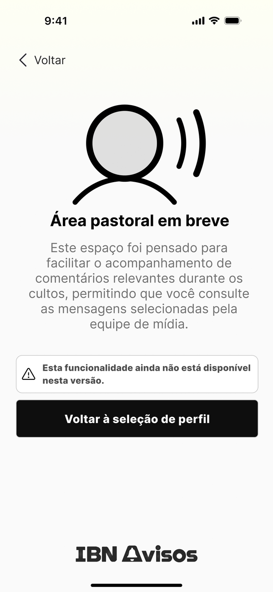
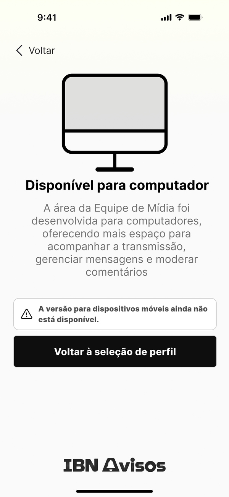
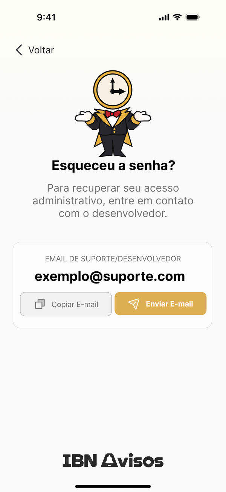
Aqui eu separo o que o protótipo já mostra do que ainda é só uma possibilidade.
Fluxos representados nas telas atuais.
Aqui eu só aponto para onde o app pode ir:
Tudo isso guardando o mínimo possível de dados, porque convicção religiosa é dado sensível pela lei.
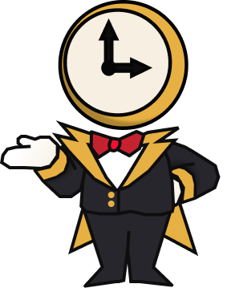
Há uma pergunta que o projeto ainda não respondeu: isso deveria continuar depois da extensão, ou é um projeto que cumpriu seu papel e fica por aqui?
Qualquer resposta vale.
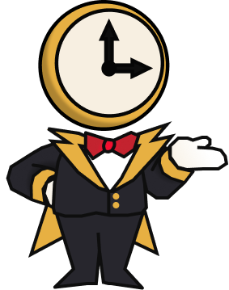
RESPOSTA ANÔNIMA · MENOS DE UM MINUTO
Não abriu? Responda em outra aba.